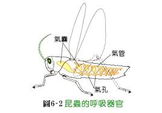

呼吸系統
不管是人類、動物或魚類都需要呼吸才能生存下去，呼吸系統是指生物體內將呼吸器吸入體內並進行氣體交換的系統。

魚類是靠水來呼吸的，魚把水送進鰓，溶在水中的氧可滲入鰓中的血管。

蝌蚪水中生活時有鰓，變成青蛙上陸以後，就需要稱為肺的內囊。

氧氣在內囊中進入血管可以看到人類胚胎上鰓的痕跡，但胎兒在出生前仍依賴母體供應氧氣出生後自己的肺才發揮功能。

昆蟲沒有肺，牠們有複雜的氣管系統運送氧氣到身體各部位。
循環系統
所有脊椎動物有密閉的循環系統，他的管道輸血至全身，心臟是動力源，血液攜帶氧氣到全身的組織。
- 魚先把血液由心壓過鰓，從水中吸收了氧氣後逕送到體內。
- 脊椎動物有兩套循環系統1.由肺出來的血液必先到心臟再壓送身體其他部分
2.青蛙的心臟只有部份分開，故來自肺臟的含氧血和來自身體的缺氧血在心底混合。 - 哺乳類的心臟完全分成左右兩部分，含氧血與缺氧血完全分開，故輸到組織的氧量較充足。
- 昆蟲並不從血液中獲取氧氣，而是經由氣管。他們的心臟只是一段有雞肉的血管，血先送到頭部，然後就進入體腔，血液再流回到心臟。
體溫控制
在水中，溫度的變化是漸進的，而路面的溫度卻很急驟，陸生動物就必須設法解決體溫控制的問題。
冷血動物並非"冷"血，而是牠們的代謝率較慢，無法在夜間保持溫度。牠們在白天曬太陽以升高體溫;太熱了就躲到蔭涼處。
溫血動物能產生足夠的體熱來維持一定的體溫，體表外層又覆蓋了毛皮或羽毛之隔熱層，體溫較不受外界環境的影響。